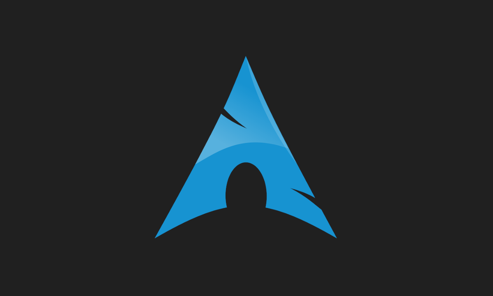

Los Sistemas Operativos más conocidos
GNU/Linux es un tipo de Sistema Operativo basado en Unix que suele ser de código abierto y que destaca por estar formado por software Libre.
Comúnmente se le suele llamar Linux al Sistema Operativo, cosa que es incorrecta: Linux es solo el núcleo del Sistema Operativo (El Kernel). Por otro lado, el proyecto GNU se trata del Sistema Operativo, así como de una gran colección de Software Libre (Como por ejemplo GIMP o GNOME).
Algunas de las distribuciones GNU/Linux son:


Más información sobre GNU/Linux aquí